Work in progress
knitr::opts_chunk$set(echo = TRUE)
library(reticulate)
Sys.setenv(RETICULATE_PYTHON =
"/home/pschaefer/miniconda3/envs/r-reticulate/bin/python")
timestamp <- format(Sys.time(), "%Y-%m-%d-%H-%M")
s <- 4242
run_again <- TRUEif (run_again) {
print("run_again set to TRUE, thus everything will be recomputed")
} else {
print("run_again set to FALSE, thus old results will be kept")
}## [1] "run_again set to TRUE, thus everything will be recomputed"Loading Packages
suppressPackageStartupMessages({
library(tidyverse)
library(magrittr)
library(sparseMatrixStats)
library(scDblFinder)
library(scuttle)
library(scran)
library(scater)
library(ggside)
})if (Sys.info()["nodename"] == "CrunchyPeanut") {
input_dir <- "/mnt/sda/data/cov19_raw/"
output_dir <- "/home/philipp/Bioinfo_Playground/cov19_balf_gex_qc_output/"
if (!dir.exists(output_dir)) dir.create(output_dir)
} else {
warning("No appropriate nodename, adjust paths manually")
stop()
}list.files(input_dir)## [1] "GSM4339769_C141_filtered_feature_bc_matrix.h5"
## [2] "GSM4339770_C142_filtered_feature_bc_matrix.h5"
## [3] "GSM4339771_C143_filtered_feature_bc_matrix.h5"
## [4] "GSM4339772_C144_filtered_feature_bc_matrix.h5"
## [5] "GSM4339773_C145_filtered_feature_bc_matrix.h5"
## [6] "GSM4339774_C146_filtered_feature_bc_matrix.h5"
## [7] "GSM4475048_C51_filtered_feature_bc_matrix.h5"
## [8] "GSM4475049_C52_filtered_feature_bc_matrix.h5"
## [9] "GSM4475050_C100_filtered_feature_bc_matrix.h5"
## [10] "GSM4475051_C148_filtered_feature_bc_matrix.h5"
## [11] "GSM4475052_C149_filtered_feature_bc_matrix.h5"
## [12] "GSM4475053_C152_filtered_feature_bc_matrix.h5"
## [13] "hc4"Reading in the meta data from the authors.
samples_meta <- read_tsv( url( "https://raw.githubusercontent.com/zhangzlab/covid_balf/master/meta.txt" ) )## Rows: 13 Columns: 10
## ── Column specification ─────────────────────────────────────────────────
## Delimiter: "\t"
## chr (5): sample, sample_new, sample_new_old, group, disease
## dbl (5): nCoV_mean, nFeature_RNA_low, nFeature_RNA_high, nCount_RNA_t...
##
## ℹ Use `spec()` to retrieve the full column specification for this data.
## ℹ Specify the column types or set `show_col_types = FALSE` to quiet this message.samples_metaReading in the matrices.
rna_list <- purrr::map2(samples_meta$sample, samples_meta$sample_new, function(sample, name) {
if (!str_starts(sample, "GSM")) {
Seurat::Read10X_h5(list.files(input_dir, full.names = TRUE)[
str_detect(list.files(input_dir), sample)
])
} else {
Seurat::Read10X(list.files(input_dir, full.names = TRUE)[
str_detect(list.files(input_dir), tolower(name))
])
}
}) %>%
purrr::set_names(samples_meta$sample_new)## Warning in sparseMatrix(i = indices[] + 1, p = indptr[], x = as.numeric(x
## = counts[]), : 'giveCsparse' has been deprecated; setting 'repr = "T"'
## for you
## Warning in sparseMatrix(i = indices[] + 1, p = indptr[], x = as.numeric(x
## = counts[]), : 'giveCsparse' has been deprecated; setting 'repr = "T"'
## for you
## Warning in sparseMatrix(i = indices[] + 1, p = indptr[], x = as.numeric(x
## = counts[]), : 'giveCsparse' has been deprecated; setting 'repr = "T"'
## for you
## Warning in sparseMatrix(i = indices[] + 1, p = indptr[], x = as.numeric(x
## = counts[]), : 'giveCsparse' has been deprecated; setting 'repr = "T"'
## for you
## Warning in sparseMatrix(i = indices[] + 1, p = indptr[], x = as.numeric(x
## = counts[]), : 'giveCsparse' has been deprecated; setting 'repr = "T"'
## for you
## Warning in sparseMatrix(i = indices[] + 1, p = indptr[], x = as.numeric(x
## = counts[]), : 'giveCsparse' has been deprecated; setting 'repr = "T"'
## for you
## Warning in sparseMatrix(i = indices[] + 1, p = indptr[], x = as.numeric(x
## = counts[]), : 'giveCsparse' has been deprecated; setting 'repr = "T"'
## for you
## Warning in sparseMatrix(i = indices[] + 1, p = indptr[], x = as.numeric(x
## = counts[]), : 'giveCsparse' has been deprecated; setting 'repr = "T"'
## for you
## Warning in sparseMatrix(i = indices[] + 1, p = indptr[], x = as.numeric(x
## = counts[]), : 'giveCsparse' has been deprecated; setting 'repr = "T"'
## for you
## Warning in sparseMatrix(i = indices[] + 1, p = indptr[], x = as.numeric(x
## = counts[]), : 'giveCsparse' has been deprecated; setting 'repr = "T"'
## for you
## Warning in sparseMatrix(i = indices[] + 1, p = indptr[], x = as.numeric(x
## = counts[]), : 'giveCsparse' has been deprecated; setting 'repr = "T"'
## for you
## Warning in sparseMatrix(i = indices[] + 1, p = indptr[], x = as.numeric(x
## = counts[]), : 'giveCsparse' has been deprecated; setting 'repr = "T"'
## for youstr(rna_list)## List of 13
## $ HC1:Formal class 'dgCMatrix' [package "Matrix"] with 6 slots
## .. ..@ i : int [1:13825036] 27 66 72 78 93 102 105 122 154 178 ...
## .. ..@ p : int [1:11116] 0 1635 3021 4750 6389 8111 8496 9808 10143 11450 ...
## .. ..@ Dim : int [1:2] 33538 11115
## .. ..@ Dimnames:List of 2
## .. .. ..$ : chr [1:33538] "MIR1302-2HG" "FAM138A" "OR4F5" "AL627309.1" ...
## .. .. ..$ : chr [1:11115] "AAACCTGAGACACTAA-1" "AAACCTGAGGAGTACC-1" "AAACCTGAGGATATAC-1" "AAACCTGAGGTCATCT-1" ...
## .. ..@ x : num [1:13825036] 5 1 1 2 1 1 1 1 9 2 ...
## .. ..@ factors : list()
## $ HC2:Formal class 'dgCMatrix' [package "Matrix"] with 6 slots
## .. ..@ i : int [1:9313106] 27 76 152 154 161 185 224 326 414 465 ...
## .. ..@ p : int [1:10367] 0 786 1076 1606 2634 3562 4575 5453 5878 6930 ...
## .. ..@ Dim : int [1:2] 33538 10366
## .. ..@ Dimnames:List of 2
## .. .. ..$ : chr [1:33538] "MIR1302-2HG" "FAM138A" "OR4F5" "AL627309.1" ...
## .. .. ..$ : chr [1:10366] "AAACCTGAGATATACG-1" "AAACCTGAGATCCGAG-1" "AAACCTGAGCACAGGT-1" "AAACCTGAGCGTGAAC-1" ...
## .. ..@ x : num [1:9313106] 1 1 1 5 1 1 1 1 1 1 ...
## .. ..@ factors : list()
## $ HC3:Formal class 'dgCMatrix' [package "Matrix"] with 6 slots
## .. ..@ i : int [1:17357707] 643 1038 1810 1871 1931 1933 1960 2398 3363 3465 ...
## .. ..@ p : int [1:8973] 0 83 219 1596 1668 2504 3609 7128 7245 11775 ...
## .. ..@ Dim : int [1:2] 33538 8972
## .. ..@ Dimnames:List of 2
## .. .. ..$ : chr [1:33538] "MIR1302-2HG" "FAM138A" "OR4F5" "AL627309.1" ...
## .. .. ..$ : chr [1:8972] "AAACCCAAGGTAGACC-1" "AAACCCACACTGTCCT-1" "AAACCCACAGCTACAT-1" "AAACCCAGTTCGGCCA-1" ...
## .. ..@ x : num [1:17357707] 1 1 1 1 1 1 2 1 1 1 ...
## .. ..@ factors : list()
## $ HC4:Formal class 'dgCMatrix' [package "Matrix"] with 6 slots
## .. ..@ i : int [1:13467593] 19271 28197 32740 7482 26573 33501 29390 31101 33501 5733 ...
## .. ..@ p : int [1:737281] 0 3 6 6 9 11 12 14 15 15 ...
## .. ..@ Dim : int [1:2] 33538 737280
## .. ..@ Dimnames:List of 2
## .. .. ..$ : chr [1:33538] "MIR1302-2HG" "FAM138A" "OR4F5" "AL627309.1" ...
## .. .. ..$ : chr [1:737280] "AAACCTGAGAAACCAT-1" "AAACCTGAGAAACCGC-1" "AAACCTGAGAAACCTA-1" "AAACCTGAGAAACGAG-1" ...
## .. ..@ x : num [1:13467593] 1 1 1 1 1 1 1 1 1 1 ...
## .. ..@ factors : list()
## $ M1 :Formal class 'dgCMatrix' [package "Matrix"] with 6 slots
## .. ..@ i : int [1:13620931] 27 51 53 55 121 152 154 201 259 271 ...
## .. ..@ p : int [1:6250] 0 1596 6872 6935 8724 8786 10790 10843 10898 12349 ...
## .. ..@ Dim : int [1:2] 33539 6249
## .. ..@ Dimnames:List of 2
## .. .. ..$ : chr [1:33539] "MIR1302-2HG" "FAM138A" "OR4F5" "AL627309.1" ...
## .. .. ..$ : chr [1:6249] "AAACCTGAGATGTCGG-1" "AAACCTGAGGCTCATT-1" "AAACCTGAGTTGTCGT-1" "AAACCTGCAATCCGAT-1" ...
## .. ..@ x : num [1:13620931] 8 1 1 1 1 2 9 1 1 1 ...
## .. ..@ factors : list()
## $ M2 :Formal class 'dgCMatrix' [package "Matrix"] with 6 slots
## .. ..@ i : int [1:13152036] 471 688 736 1617 1674 2192 2353 5645 5704 6202 ...
## .. ..@ p : int [1:10270] 0 89 1527 1584 6793 8482 12855 12912 17866 17925 ...
## .. ..@ Dim : int [1:2] 33539 10269
## .. ..@ Dimnames:List of 2
## .. .. ..$ : chr [1:33539] "MIR1302-2HG" "FAM138A" "OR4F5" "AL627309.1" ...
## .. .. ..$ : chr [1:10269] "AAACCTGAGATCGGGT-1" "AAACCTGAGTGAACGC-1" "AAACCTGCAGCTGCAC-1" "AAACCTGGTCAAAGCG-1" ...
## .. ..@ x : num [1:13152036] 1 1 1 1 1 1 1 1 1 9 ...
## .. ..@ factors : list()
## $ M3 :Formal class 'dgCMatrix' [package "Matrix"] with 6 slots
## .. ..@ i : int [1:1397983] 1498 2339 2405 2592 2895 4431 5000 11451 14397 14690 ...
## .. ..@ p : int [1:3717] 0 40 85 124 450 510 593 679 1078 1131 ...
## .. ..@ Dim : int [1:2] 33539 3716
## .. ..@ Dimnames:List of 2
## .. .. ..$ : chr [1:33539] "MIR1302-2HG" "FAM138A" "OR4F5" "AL627309.1" ...
## .. .. ..$ : chr [1:3716] "AAACCTGAGCTAGTGG-1" "AAACCTGCAGCCTTTC-1" "AAACCTGCAGCTGTGC-1" "AAACCTGGTCTAGTGT-1" ...
## .. ..@ x : num [1:1397983] 1 1 1 1 1 2 1 2 2 2 ...
## .. ..@ factors : list()
## $ S1 :Formal class 'dgCMatrix' [package "Matrix"] with 6 slots
## .. ..@ i : int [1:19417652] 27 29 77 171 229 251 326 404 473 493 ...
## .. ..@ p : int [1:18045] 0 691 1108 1852 3855 5557 6090 6361 7615 8335 ...
## .. ..@ Dim : int [1:2] 33539 18044
## .. ..@ Dimnames:List of 2
## .. .. ..$ : chr [1:33539] "MIR1302-2HG" "FAM138A" "OR4F5" "AL627309.1" ...
## .. .. ..$ : chr [1:18044] "AAACCTGAGCCCGAAA-1" "AAACCTGAGCCTATGT-1" "AAACCTGAGCTACCGC-1" "AAACCTGAGGAGTAGA-1" ...
## .. ..@ x : num [1:19417652] 7 1 1 1 1 1 1 1 1 3 ...
## .. ..@ factors : list()
## $ S2 :Formal class 'dgCMatrix' [package "Matrix"] with 6 slots
## .. ..@ i : int [1:35103515] 26 27 66 93 154 178 229 240 261 382 ...
## .. ..@ p : int [1:20858] 0 999 2394 3641 4487 7799 9367 10814 13179 13495 ...
## .. ..@ Dim : int [1:2] 33539 20857
## .. ..@ Dimnames:List of 2
## .. .. ..$ : chr [1:33539] "MIR1302-2HG" "FAM138A" "OR4F5" "AL627309.1" ...
## .. .. ..$ : chr [1:20857] "AAACCTGAGACTTTCG-1" "AAACCTGAGCATGGCA-1" "AAACCTGAGCCATCGC-1" "AAACCTGAGCGTGAAC-1" ...
## .. ..@ x : num [1:35103515] 1 12 1 1 1 2 1 1 2 1 ...
## .. ..@ factors : list()
## $ S3 :Formal class 'dgCMatrix' [package "Matrix"] with 6 slots
## .. ..@ i : int [1:2812364] 26 27 100 229 451 595 602 736 762 783 ...
## .. ..@ p : int [1:4112] 0 296 1858 2184 2500 2721 6477 8770 8827 9341 ...
## .. ..@ Dim : int [1:2] 33539 4111
## .. ..@ Dimnames:List of 2
## .. .. ..$ : chr [1:33539] "MIR1302-2HG" "FAM138A" "OR4F5" "AL627309.1" ...
## .. .. ..$ : chr [1:4111] "AAACCTGCACATAACC-1" "AAACCTGCACGACTCG-1" "AAACCTGCAGGCTGAA-1" "AAACCTGGTGCACCAC-1" ...
## .. ..@ x : num [1:2812364] 1 30 1 1 1 1 1 1 2 1 ...
## .. ..@ factors : list()
## $ S4 :Formal class 'dgCMatrix' [package "Matrix"] with 6 slots
## .. ..@ i : int [1:6186401] 493 740 904 918 936 1512 1617 1802 1931 1933 ...
## .. ..@ p : int [1:3921] 0 107 6378 6984 7017 9052 10712 15677 17745 19035 ...
## .. ..@ Dim : int [1:2] 33539 3920
## .. ..@ Dimnames:List of 2
## .. .. ..$ : chr [1:33539] "MIR1302-2HG" "FAM138A" "OR4F5" "AL627309.1" ...
## .. .. ..$ : chr [1:3920] "AAACCTGAGAGAACAG-1" "AAACCTGAGCTGCCCA-1" "AAACCTGAGGAATCGC-1" "AAACCTGGTGGTACAG-1" ...
## .. ..@ x : num [1:6186401] 1 1 1 1 1 1 1 1 2 1 ...
## .. ..@ factors : list()
## $ S5 :Formal class 'dgCMatrix' [package "Matrix"] with 6 slots
## .. ..@ i : int [1:4251674] 26 27 78 528 531 597 600 607 643 762 ...
## .. ..@ p : int [1:2880] 0 297 335 1828 3010 4676 5949 8406 10214 11217 ...
## .. ..@ Dim : int [1:2] 33539 2879
## .. ..@ Dimnames:List of 2
## .. .. ..$ : chr [1:33539] "MIR1302-2HG" "FAM138A" "OR4F5" "AL627309.1" ...
## .. .. ..$ : chr [1:2879] "AAACCTGAGCGAAGGG-1" "AAACCTGCACCTCGTT-1" "AAACCTGCAGTGGGAT-1" "AAACCTGCATTCGACA-1" ...
## .. ..@ x : num [1:4251674] 3 32 1 1 1 2 1 1 2 1 ...
## .. ..@ factors : list()
## $ S6 :Formal class 'dgCMatrix' [package "Matrix"] with 6 slots
## .. ..@ i : int [1:7923709] 15 27 154 178 251 271 414 449 493 504 ...
## .. ..@ p : int [1:7733] 0 630 1045 2140 2350 7868 7915 9021 11075 11511 ...
## .. ..@ Dim : int [1:2] 33539 7732
## .. ..@ Dimnames:List of 2
## .. .. ..$ : chr [1:33539] "MIR1302-2HG" "FAM138A" "OR4F5" "AL627309.1" ...
## .. .. ..$ : chr [1:7732] "AAACCTGAGCCACTAT-1" "AAACCTGAGTAAGTAC-1" "AAACCTGAGTGGGCTA-1" "AAACCTGAGTGTTTGC-1" ...
## .. ..@ x : num [1:7923709] 1 3 3 1 1 1 1 1 5 1 ...
## .. ..@ factors : list()We need to remove the cov19 row before we can proceed.
rownames(rna_list$M1)[grep("cov", rownames(rna_list$M1), ignore.case=T)]## [1] "nCoV"rna_list <- purrr::map(rna_list, ~ .x[rownames(.x) != "nCoV", ])
# check that the rownames are consistent
stopifnot(
all(
purrr::map_dfc(rna_list, ~rownames(.x)) %>% apply(1, function(x) all(x==x[1]))
)
)First we will remove all genes that are not expressed in at least 3 cell in all sample (speeding up the downstream analysis).
Removing genes which are not expressed in at least 3 cells in all samples.
idx <- purrr::map_dfc(rna_list, ~ Matrix::rowSums(.x != 0) >= 3) %>%
apply(1, all)
good_genes <- rownames(rna_list[[1]])[idx]
print(paste0("Retained genes: ", length(good_genes),
" from ", nrow(rna_list[[1]])))## [1] "Retained genes: 13542 from 33538"rna_list <- purrr::map(rna_list, function(smp) {
smp[good_genes, ]
})Before subsetting we will create a tibble containing the metadata which we will update throughout the analysis.
coldata <- purrr::imap_dfr(rna_list, ~ tibble::tibble(
sample = .y, barcode = colnames(.x))) %>%
mutate(joint_barcode = paste0(sample, "_", barcode))
coldata %>% glimpse()## Rows: 845,510
## Columns: 3
## $ sample <chr> "HC1", "HC1", "HC1", "HC1", "HC1", "HC1", "HC1", …
## $ barcode <chr> "AAACCTGAGACACTAA-1", "AAACCTGAGGAGTACC-1", "AAAC…
## $ joint_barcode <chr> "HC1_AAACCTGAGACACTAA-1", "HC1_AAACCTGAGGAGTACC-1…Plotting log10 of the cumulative UMI counts vs the rank of the cell or rather barcode (“kneeplot”). We need to find thresholds for each sample.
purrr::imap_dfr(rna_list, ~ tibble(sample = .y,
umi_per_cell = Matrix::colSums(.x))) %>%
arrange(sample, desc(umi_per_cell)) %>%
group_by(sample) %>%
mutate(idx = seq_along(sample)) %>%
mutate(cum_umi_per_cell = cumsum(umi_per_cell)) %>%
ggplot() +
geom_line(aes(x=idx, y=cum_umi_per_cell)) +
facet_wrap(~sample, scales = "fixed") +
scale_y_log10() + scale_x_log10() +
labs(x = "Index", y = "Cumulative UMI Count")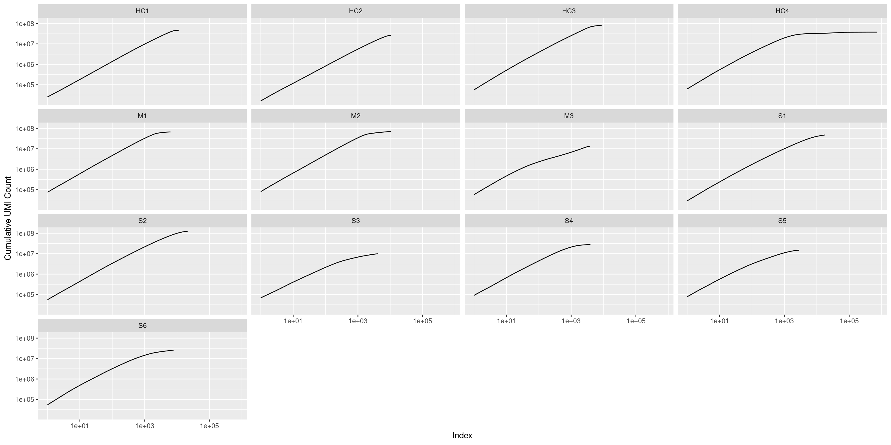
And we will be using the following thresholds (determined by visual inspection). Especially for “sm027_Tel_5c_20211123” there is a very obvious knee, for the other samples the thresholds are a little bit arbitrary (like everything in bioinformatics).
thresholds <- c("HC1" = 10000,
"HC2" = 10000,
"HC3" = 9000,
"HC4" = 1800,
"M1" = 3000,
"M2" = 1800,
"M3" = 3000,
"S1" = 10000,
"S2" = 10000,
"S3" = 3000,
"S4" = 1800,
"S5" = 2200,
"S6" = 2500
)
stopifnot(all(names(rna_list) == names(thresholds)))We clearly see that we got the filtered matrices already (meaning filtered by cellranger), except for the additional sample HC4.
p.list <- purrr::map(unique(coldata$sample), function(smp) {
tibble::tibble(
sample = smp,
umi_per_cell = sparseMatrixStats::colSums2(rna_list[[smp]])) %>%
arrange(sample, desc(umi_per_cell)) %>%
group_by(sample) %>%
mutate(idx = seq_along(sample)) %>%
mutate(cum_umi_per_cell = cumsum(umi_per_cell)) %>%
ggplot() +
geom_line(aes(x=idx, y=cum_umi_per_cell)) +
geom_vline(xintercept = thresholds[smp], color = "red") +
scale_y_log10() + scale_x_log10() +
labs(x = "Index", y = "Cumulative UMI Count", title = smp) +
theme(plot.title = element_text(hjust = 0.5))
})
do.call(gridExtra::grid.arrange, p.list)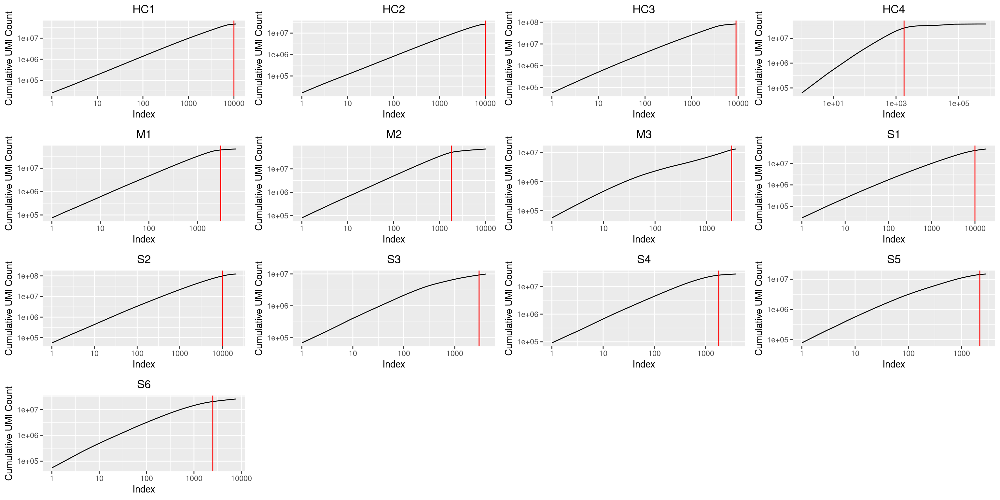
Lastly we subset the count matrices based on these results.
cell_qc <- purrr::map_dfr(unique(coldata$sample), function(smp) {
tibble(sample = smp,
sum_umis = Matrix::colSums(rna_list[[smp]]),
detected_genes = Matrix::colSums(rna_list[[smp]] != 0),
barcode = colnames(rna_list[[smp]]),
threshold = thresholds[smp]) }) %>%
arrange(sample, desc(sum_umis)) %>%
group_by(sample) %>%
mutate(rank = seq_along(sample)) %>%
mutate(cum_umi_per_cell = cumsum(sum_umis)) %>%
mutate(non_empty = ifelse(rank <= threshold, TRUE, FALSE))
coldata <- coldata %>%
dplyr::left_join(cell_qc, by=c("sample", "barcode")) %>%
dplyr::select(sample, barcode, joint_barcode, sum_umis, detected_genes,
non_empty) %>%
dplyr::filter(non_empty) %>%
dplyr::select(!non_empty)
rna_list <- purrr::map(names(rna_list), function(smp) {
mtx <- rna_list[[smp]]
valid_barcodes <- coldata %>%
dplyr::filter(sample == smp) %>%
dplyr::pull(barcode)
mtx[,valid_barcodes]
}) %>% set_names(names(rna_list))Check again. And I think it looks ok now.
purrr::imap_dfr(rna_list, ~ tibble(sample = .y,
umi_per_cell = Matrix::colSums(.x))) %>%
arrange(sample, desc(umi_per_cell)) %>%
group_by(sample) %>%
mutate(idx = seq_along(sample)) %>%
mutate(cum_umi_per_cell = cumsum(umi_per_cell)) %>%
ggplot() +
geom_line(aes(x=idx, y=cum_umi_per_cell)) +
facet_wrap(~sample, scales = "fixed") +
scale_y_log10() + scale_x_log10() +
labs(x = "Index", y = "Cumulative UMI Count")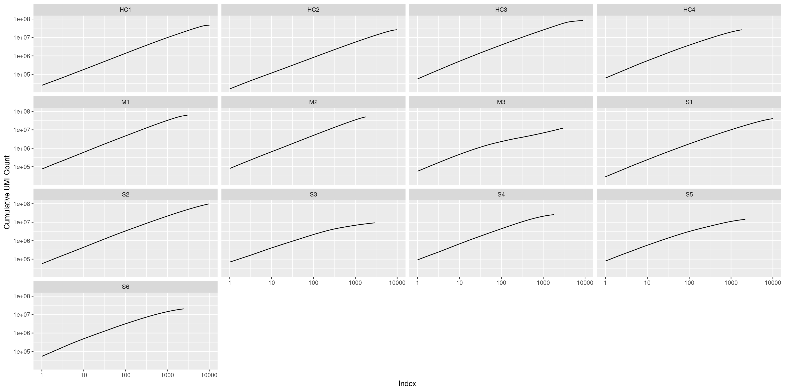
scDblFinderWe will use scDblFinder as this package it implemented in R and seems to be better than scrublet (according to their vignette at least, but I guess their comparison might be biased!). Usually these tools simulate doublets and check how similar your actual cells are to these simulated doublets.
See the description/vignette of the tool here:
To use the tools we will temporarily create a single cell experiment object.
dbr <- 0.08
print(paste0("Using an expected doublet rate of: ", dbr))## [1] "Using an expected doublet rate of: 0.08"doublet_scores_scdbl <- purrr::imap(rna_list, function(smp, name) {
print(name)
sce <- SingleCellExperiment(list(counts = smp))
sce <- logNormCounts(sce)
dec <- modelGeneVar(sce)
hvgs <- getTopHVGs(dec, n=2000)
set.seed(s)
sce <- runPCA(sce, ncomponents=30, subset_row=hvgs)
sce <- runUMAP(sce, dimred="PCA")
#scores <- computeDoubletDensity(sce, subset.row=hvgs)
sce <- scDblFinder(sce, dbr=dbr, iter=1)
scores <- sce$scDblFinder.score
classification <- sce$scDblFinder.class
names(scores) <- colnames(smp)
names(classification) <- colnames(smp)
# prepare plots
p1 <- tibble::tibble(cell = names(scores), score = scores,
UMAP1 = reducedDim(sce, "UMAP")[,1],
UMAP2 = reducedDim(sce, "UMAP")[,2]) %>%
ggplot() +
geom_point(aes(x=UMAP1, y=UMAP2, color=score), size=0.2) +
scale_color_viridis_c()
p2 <- ggplot() +
geom_histogram(aes(scores), bins = 100, fill="grey", color="black") +
labs(y = "Count", x = "Doublet Score")
# use cowplot for plotting the grid
plot_row <- cowplot::plot_grid(p1, p2)
title <- cowplot::ggdraw() +
cowplot::draw_label(label = paste(name), fontface = "bold", x = 0, hjust = -2)
print(cowplot::plot_grid(title, plot_row, ncol = 1, rel_heights = c(0.1, 1)))
list(score = scores, classifcation = classification)
})## [1] "HC1"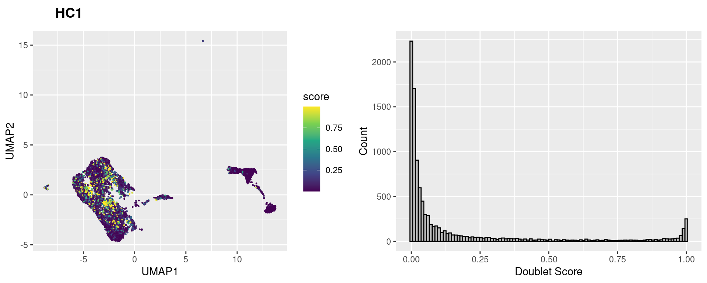
## [1] "HC2"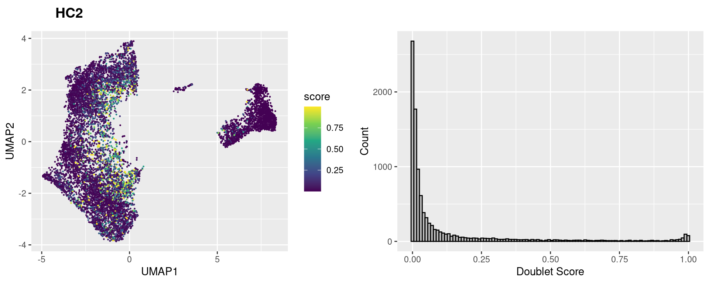
## [1] "HC3"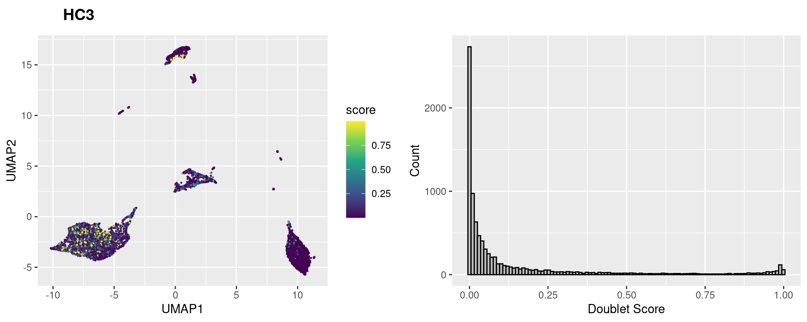
## [1] "HC4"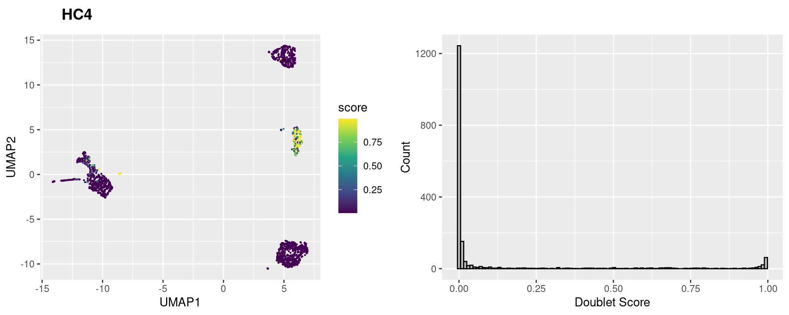
## [1] "M1"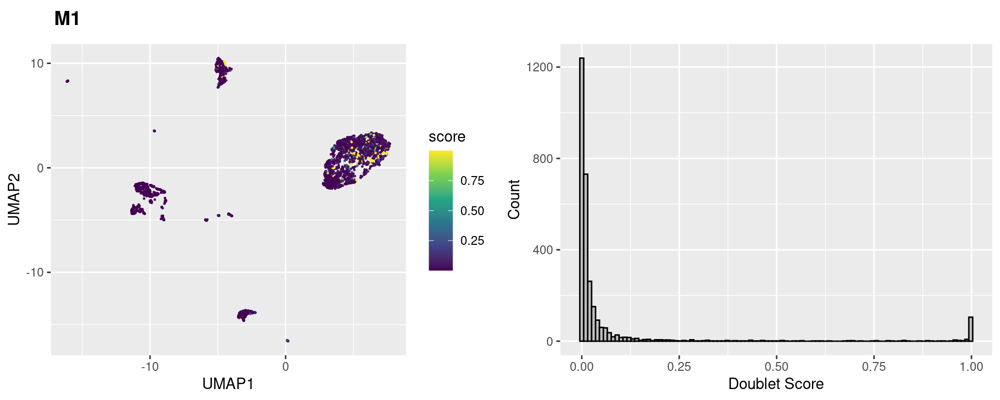
## [1] "M2"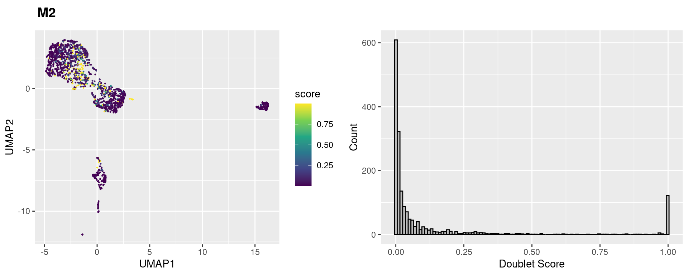
## [1] "M3"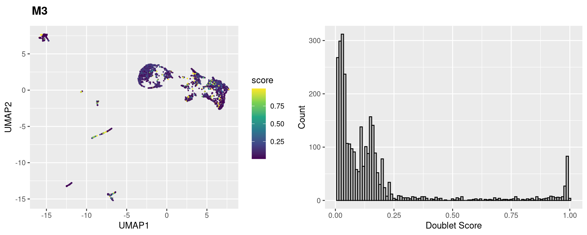
## [1] "S1"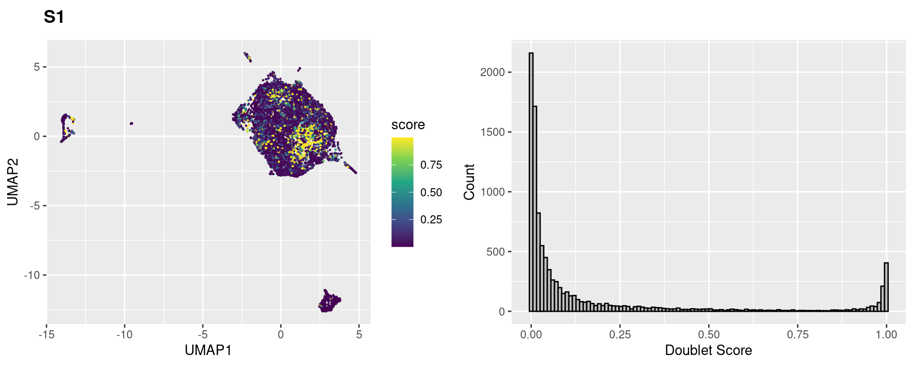
## [1] "S2"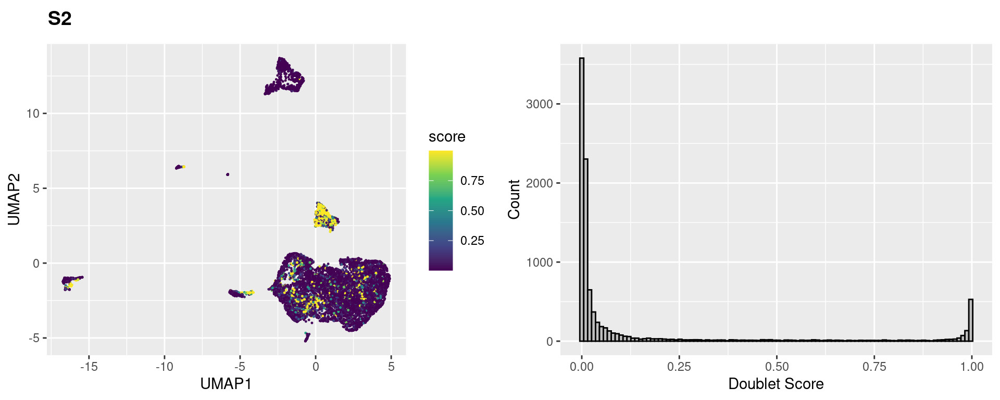
## [1] "S3"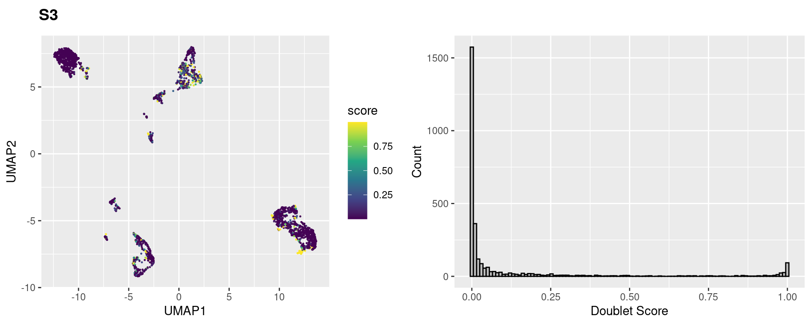
## [1] "S4"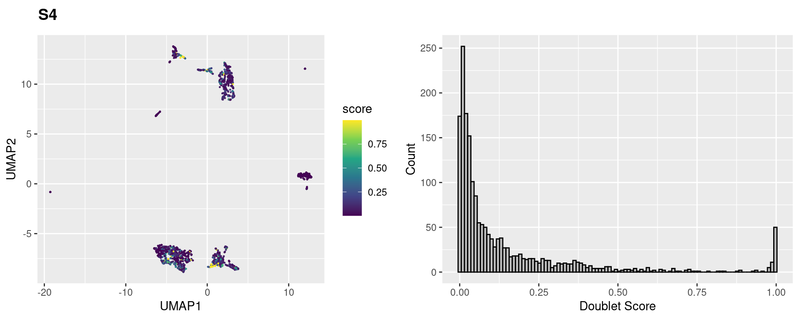
## [1] "S5"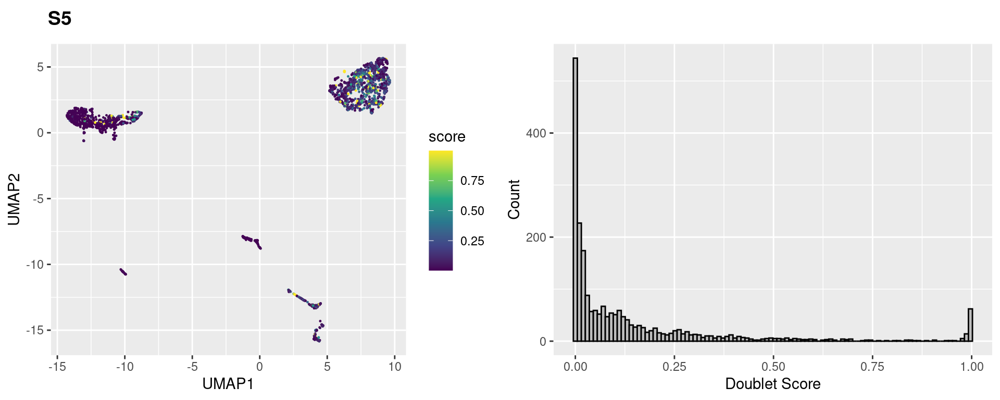
## [1] "S6"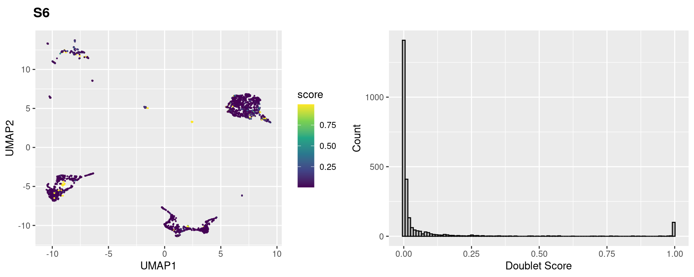
Check how many predicted doublets per sample using our threshold set above. Let’s keep the doublet scores and we will not remove/mask any cells, but rather check later on whether doublets are particularly enriched in any cluster we get.
doublet_scores_scdbl %>%
purrr::imap_dfr(function(smp, name) {
tibble::tibble(sample = name, doublet_score = smp[["score"]],
predicted_doublet = smp[["classifcation"]])
}) %>%
dplyr::count(sample, predicted_doublet) %>%
pivot_wider(names_from=predicted_doublet, values_from=n)Let’s also add the doublet scores to our coldata tibble.
doublet_scores_scdbl_tbl <- doublet_scores_scdbl %>%
purrr::imap_dfr(function(smp, name) {
tibble::tibble(sample = name,
barcode = names(smp[["score"]]),
dbl_score_scdbl = smp[["score"]],
pred_dbl_scdbl = smp[["classifcation"]])
})
coldata <- coldata %>%
left_join(doublet_scores_scdbl_tbl, by=c("sample", "barcode"))
coldata %>%
glimpse()## Rows: 68,072
## Columns: 7
## $ sample <chr> "HC1", "HC1", "HC1", "HC1", "HC1", "HC1", "HC1"…
## $ barcode <chr> "AAACCTGAGACACTAA-1", "AAACCTGAGGAGTACC-1", "AA…
## $ joint_barcode <chr> "HC1_AAACCTGAGACACTAA-1", "HC1_AAACCTGAGGAGTACC…
## $ sum_umis <dbl> 5219, 5048, 5519, 5619, 7326, 644, 4597, 4254, …
## $ detected_genes <int> 1626, 1366, 1719, 1628, 1698, 382, 1299, 1301, …
## $ dbl_score_scdbl <dbl> 0.0127065051, 0.0638903156, 0.0087266751, 0.010…
## $ pred_dbl_scdbl <fct> singlet, singlet, singlet, singlet, singlet, si…Let’s look at some common QC statistics:
mito_genes <-
rownames(rna_list[[1]])[grep("^MT-", rownames(rna_list[[1]]))]
mito_genes## [1] "MT-ND1" "MT-ND2" "MT-CO1" "MT-CO2" "MT-ATP8" "MT-ATP6"
## [7] "MT-CO3" "MT-ND3" "MT-ND4L" "MT-ND4" "MT-ND5" "MT-ND6"
## [13] "MT-CYB"Computing the QC stats.
Looking at the bottom/left tail of the distributions one might argue that the cutoff with regards to the number of UMIs is a little bit too strict for sample “sm023.”
qc_stats_before <- purrr::imap_dfr(rna_list, function(mtx, name) {
umis_per_cell <- Matrix::colSums(mtx)
genes_per_cell <- Matrix::colSums(mtx != 0)
mt_fraction <- Matrix::colSums(mtx[mito_genes, ]) / Matrix::colSums(mtx) * 100
tibble(sample = name, barcode = colnames(mtx), umis_per_cell = umis_per_cell,
genes_per_cell = genes_per_cell, mt_fraction = mt_fraction)
})
qc_stats_before %>%
pivot_longer(cols = !c(sample, barcode), names_to = "stat") %>%
mutate(stat = ifelse(stat=="mt_fraction", "mt_fraction (%)", stat)) %>%
ggplot() +
geom_violin(aes(x=sample, y=value, fill=sample)) +
facet_wrap(~ stat, scales = "free") +
theme(axis.text.x = element_text(angle = 45, hjust = 1),
legend.position = "none")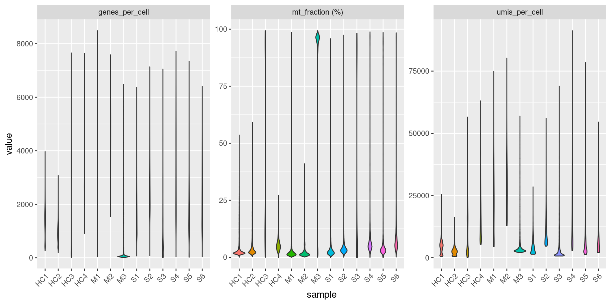
We will be used the same thresholds as the authors of the paper.
Removing cells with:
Let’s add the QC thresholds to our coldata.
coldata <- coldata %>%
left_join(qc_stats_before, by=c("sample", "barcode")) %>%
mutate(sum_umis_in_bound = (1000 < umis_per_cell),
detected_genes_in_bound = (20 < genes_per_cell & genes_per_cell <= 6000),
mt_fraction_in_bound = (mt_fraction < 10)) %>%
rowwise() %>%
mutate(qc_pass = all(sum_umis_in_bound, detected_genes_in_bound,
mt_fraction_in_bound)) %>%
ungroup()
coldata %>%
dplyr::filter(qc_pass) %>%
glimpse()## Rows: 51,440
## Columns: 14
## $ sample <chr> "HC1", "HC1", "HC1", "HC1", "HC1", "HC1…
## $ barcode <chr> "AAACCTGAGACACTAA-1", "AAACCTGAGGAGTACC…
## $ joint_barcode <chr> "HC1_AAACCTGAGACACTAA-1", "HC1_AAACCTGA…
## $ sum_umis <dbl> 5219, 5048, 5519, 5619, 7326, 4597, 425…
## $ detected_genes <int> 1626, 1366, 1719, 1628, 1698, 1299, 130…
## $ dbl_score_scdbl <dbl> 0.012706505, 0.063890316, 0.008726675, …
## $ pred_dbl_scdbl <fct> singlet, singlet, singlet, singlet, sin…
## $ umis_per_cell <dbl> 5219, 5048, 5519, 5619, 7326, 4597, 425…
## $ genes_per_cell <int> 1626, 1366, 1719, 1628, 1698, 1299, 130…
## $ mt_fraction <dbl> 1.552021, 1.802694, 1.630730, 1.957644,…
## $ sum_umis_in_bound <lgl> TRUE, TRUE, TRUE, TRUE, TRUE, TRUE, TRU…
## $ detected_genes_in_bound <lgl> TRUE, TRUE, TRUE, TRUE, TRUE, TRUE, TRU…
## $ mt_fraction_in_bound <lgl> TRUE, TRUE, TRUE, TRUE, TRUE, TRUE, TRU…
## $ qc_pass <lgl> TRUE, TRUE, TRUE, TRUE, TRUE, TRUE, TRU…And subset the count matrix according to the thresholds
rna_list_filtered <- purrr::map(names(rna_list), function(smp) {
mtx <- rna_list[[smp]]
valid_barcodes <- coldata %>%
dplyr::filter(sample == smp, qc_pass) %>%
dplyr::pull(barcode)
cat(paste0("Removing ", ncol(mtx)-length(valid_barcodes), " cells from ",
ncol(mtx), " cells in sample ", smp, "\n\n"))
mtx[,valid_barcodes]
}) %>% set_names(names(rna_list))## Removing 1537 cells from 10000 cells in sample HC1
##
## Removing 1816 cells from 10000 cells in sample HC2
##
## Removing 6420 cells from 8972 cells in sample HC3
##
## Removing 174 cells from 1800 cells in sample HC4
##
## Removing 229 cells from 3000 cells in sample M1
##
## Removing 149 cells from 1800 cells in sample M2
##
## Removing 2657 cells from 3000 cells in sample M3
##
## Removing 542 cells from 10000 cells in sample S1
##
## Removing 229 cells from 10000 cells in sample S2
##
## Removing 1735 cells from 3000 cells in sample S3
##
## Removing 320 cells from 1800 cells in sample S4
##
## Removing 192 cells from 2200 cells in sample S5
##
## Removing 632 cells from 2500 cells in sample S6stopifnot(sum(purrr::map_dbl(rna_list_filtered, ~ ncol(.x))) == sum(coldata$qc_pass))qc_stats_after <- purrr::imap_dfr(rna_list_filtered, function(mtx, name) {
umis_per_cell <- Matrix::colSums(mtx)
genes_per_cell <- Matrix::colSums(mtx != 0)
mt_fraction <- Matrix::colSums(mtx[mito_genes, ]) / Matrix::colSums(mtx) * 100
tibble(sample = name, barcode = colnames(mtx), umis_per_cell = umis_per_cell,
genes_per_cell = genes_per_cell, mt_fraction = mt_fraction)
})
qc_stats_after %>%
pivot_longer(cols = !c(sample, barcode), names_to = "stat") %>%
mutate(stat = ifelse(stat=="mt_fraction", "mt_fraction (%)", stat)) %>%
ggplot() +
geom_violin(aes(x=sample, y=value, fill=sample)) +
facet_wrap(~ stat, scales = "free") +
theme(axis.text.x = element_text(angle = 45, hjust = 1),
legend.position = "none")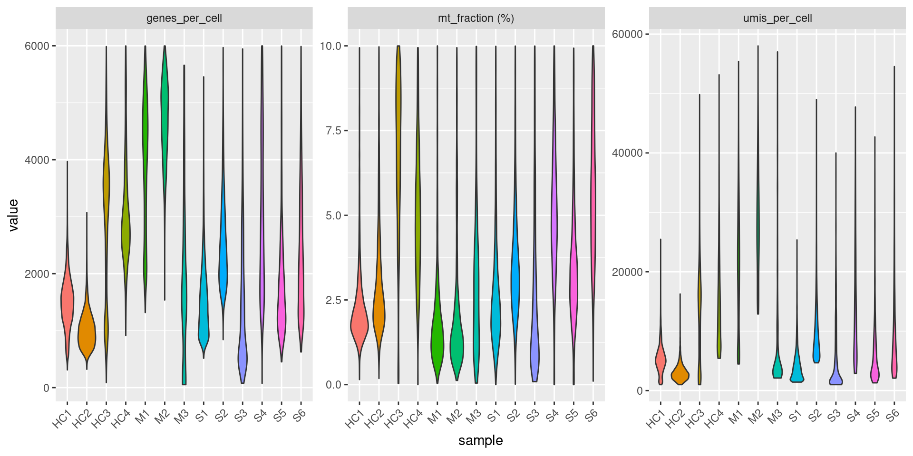
Lastly we will remove putative doublets. Therefore we will mainly use the scDblFinder Doublet Score (since it is very confident with the doublet assignment and performed goo din the latest benchmark).
coldata <- coldata %>%
mutate(is_doublet = ifelse(pred_dbl_scdbl=="doublet", TRUE, FALSE))
rna_list_filtered <- purrr::map(names(rna_list_filtered), function(smp) {
mtx <- rna_list_filtered[[smp]]
valid_barcodes <- coldata %>%
dplyr::filter(sample == smp, qc_pass, !is_doublet) %>%
dplyr::pull(barcode)
cat(paste0("Removing ", ncol(mtx)-length(valid_barcodes), " cells from ",
ncol(mtx), " cells in sample ", smp, "\n\n"))
mtx[,valid_barcodes]
}) %>% set_names(names(rna_list))## Removing 1121 cells from 8463 cells in sample HC1
##
## Removing 864 cells from 8184 cells in sample HC2
##
## Removing 172 cells from 2552 cells in sample HC3
##
## Removing 106 cells from 1626 cells in sample HC4
##
## Removing 141 cells from 2771 cells in sample M1
##
## Removing 126 cells from 1651 cells in sample M2
##
## Removing 11 cells from 343 cells in sample M3
##
## Removing 1064 cells from 9458 cells in sample S1
##
## Removing 1118 cells from 9771 cells in sample S2
##
## Removing 143 cells from 1265 cells in sample S3
##
## Removing 75 cells from 1480 cells in sample S4
##
## Removing 120 cells from 2008 cells in sample S5
##
## Removing 90 cells from 1868 cells in sample S6How many cells are we removing from each sample?
coldata_filtered <- coldata %>%
dplyr::filter(qc_pass, !is_doublet)saveRDS(rna_list,
paste0(output_dir, timestamp, "_rna_list.RDS"))
saveRDS(rna_list_filtered,
paste0(output_dir, timestamp, "_rna_list_filtered.RDS"))
saveRDS(coldata,
paste0(output_dir, timestamp, "_coldata_raw.RDS"))
saveRDS(coldata_filtered,
paste0(output_dir, timestamp, "_coldata_filtered_qc.RDS"))
save.image(file = paste0(output_dir, "Latest_RNA_QC.RData"))